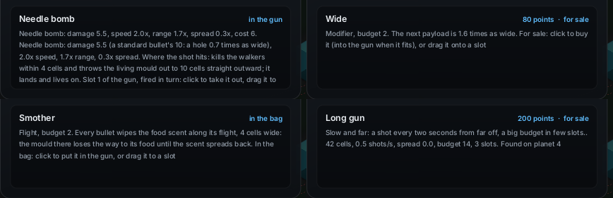
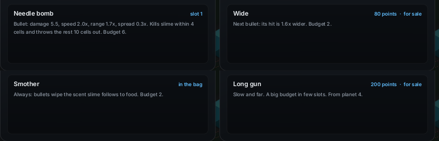
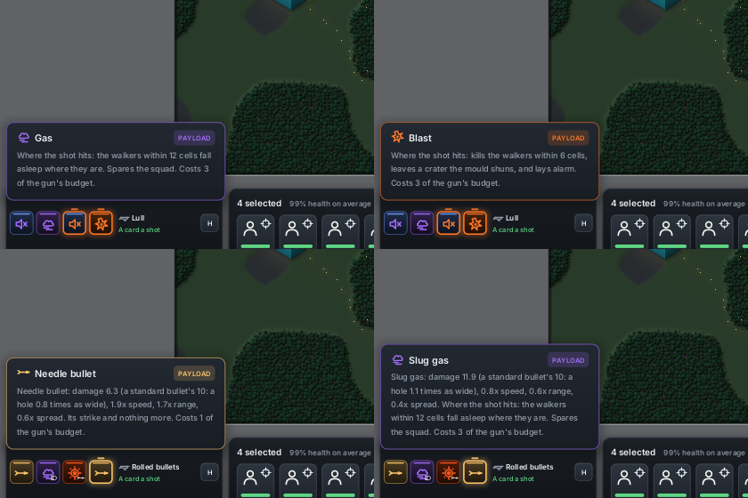
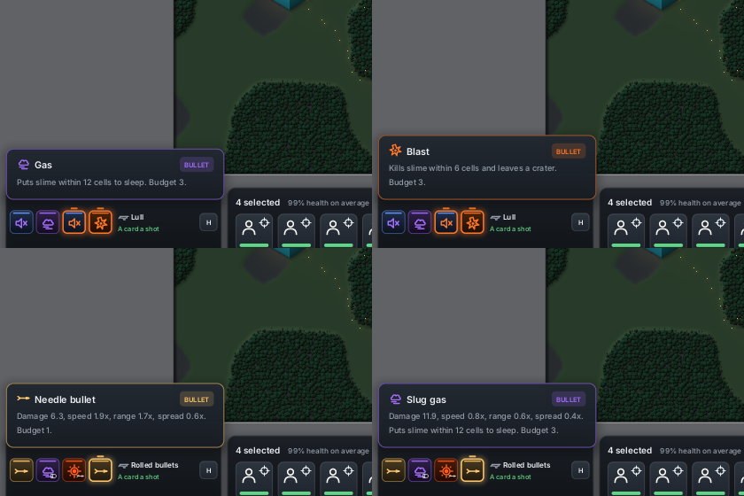

<title>Simpler Card Text</title>
<meta name="claude:viewport-fit-sides" content="cover">
<link rel="stylesheet" href="https://fonts.googleapis.com/css2?family=Space+Grotesk:wght@500;700&family=Inter:wght@400;600&display=swap">
<style>
/* Layout: one column; each before/after pair side by side (stacking on a phone), then the word list. */
:root { --bg:#f2f3ef; --fg:#1c2023; --muted:#5b6366; --panel:#ffffff; --line:#d7d9d1; --accent:#5d7f3a;
  --display:"Space Grotesk",system-ui,sans-serif; --body:"Inter",system-ui,sans-serif; }
@media (prefers-color-scheme: dark) { :root:not([data-theme="light"]) { --bg:#121516; --fg:#e6e9e5; --muted:#99a2a2; --panel:#1a1e20; --line:#2b3134; --accent:#a3c97a; color-scheme:dark } }
:root[data-theme="dark"] { --bg:#121516; --fg:#e6e9e5; --muted:#99a2a2; --panel:#1a1e20; --line:#2b3134; --accent:#a3c97a; color-scheme:dark }
body { background:var(--bg); color:var(--fg); font-family:var(--body); line-height:1.55; margin:0; }
main { max-width:1000px; margin:0 auto; padding-block:32px 48px; padding-left:max(16px, env(safe-area-inset-left, 0px)); padding-right:max(16px, env(safe-area-inset-right, 0px)); display:grid; gap:28px; }
h1, h2 { font-family:var(--display); text-wrap:balance; margin:0; }
h1 { font-size:2rem; } h2 { font-size:1.25rem; }
p { margin:0; max-width:65ch; }
.muted { color:var(--muted); }
section { display:grid; gap:12px; min-width:0; }
.pair { display:grid; grid-template-columns:repeat(auto-fit, minmax(300px, 1fr)); gap:12px; }
figure { margin:0; background:var(--panel); border:1px solid var(--line); border-radius:6px; overflow:hidden; }
figure img { display:block; width:100%; height:auto; }
figcaption { padding:10px 14px; display:flex; flex-wrap:wrap; gap:6px 14px; align-items:baseline; }
.tag { font-family:var(--display); font-weight:700; color:var(--accent); }
.note { color:var(--muted); }
table { border-collapse:collapse; width:100%; font-size:.95rem; }
td, th { text-align:left; padding:6px 10px; border-bottom:1px solid var(--line); vertical-align:top; }
th { font-family:var(--display); }
.wrap { overflow-x:auto; }
</style>
<main>
  <header style="display:grid;gap:8px">
    <h1>Simpler card text</h1>
    <p class="muted">You said the gun cards had too much text. Each card now says one short sentence. Its kind is in plain words: Bullet, Next bullet, or Always. How to click and drag is no longer repeated on every card.</p>
  </header>

  <section>
    <h2>Shop: the box under the upgrades</h2>
    <div class="pair">
      <figure><figcaption><span class="tag">Before</span><span class="note">Needle bomb: 70 words, numbers twice, cut off</span></figcaption></figure>
      <figure><figcaption><span class="tag">After</span><span class="note">Needle bomb: 25 words; Wide: 9</span></figcaption></figure>
    </div>
  </section>

  <section>
    <h2>In play: a card's tooltip</h2>
    <div class="pair">
      <figure><figcaption><span class="tag">Before</span><span class="note">gas, blast, needle bullet, slug gas: 3 to 4 lines each</span></figcaption></figure>
      <figure><figcaption><span class="tag">After</span><span class="note">the same four cards: 1 to 2 lines each</span></figcaption></figure>
    </div>
  </section>

  <section>
    <h2>Every card's words now</h2>
    <div class="wrap"><table>
      <tr><th>Card</th><th>Kind</th><th>Says</th></tr>
      <tr><td>Plain</td><td>Bullet</td><td>Just its hit.</td></tr>
      <tr><td>Blast</td><td>Bullet</td><td>Kills slime within 6 cells and leaves a crater.</td></tr>
      <tr><td>Gas</td><td>Bullet</td><td>Puts slime within 12 cells to sleep.</td></tr>
      <tr><td>Germ</td><td>Bullet</td><td>Infects slime within 5 cells; the sickness spreads.</td></tr>
      <tr><td>Bomb</td><td>Bullet</td><td>Kills slime within 4 cells and throws the rest 10 cells out.</td></tr>
      <tr><td>Rolled bullet</td><td>Bullet</td><td>Damage 5.5, speed 2.0x, range 1.7x, spread 0.3x. Then what its bullet does.</td></tr>
      <tr><td>Wide</td><td>Next bullet</td><td>Its hit is 1.6x wider.</td></tr>
      <tr><td>Scatter</td><td>Next bullet</td><td>Its hit becomes 3 smaller ones.</td></tr>
      <tr><td>Quiet</td><td>Next bullet</td><td>It doesn't alarm the slime.</td></tr>
      <tr><td>Delay</td><td>Next bullet</td><td>It goes off 3 s after landing.</td></tr>
      <tr><td>Thick</td><td>Next bullet</td><td>It waits until slime crowds round it (up to 30 s).</td></tr>
      <tr><td>Thrift</td><td>Next bullet</td><td>The next card costs 2 less budget.</td></tr>
      <tr><td>Pierce</td><td>Always</td><td>Bullets go through one slime hit.</td></tr>
      <tr><td>Split</td><td>Always</td><td>Bullets split in 3 where they land.</td></tr>
      <tr><td>Scorch</td><td>Always</td><td>Bullets burn a line the slime avoids for 4 s.</td></tr>
      <tr><td>Bait</td><td>Always</td><td>Bullets leave a scent line the slime follows.</td></tr>
      <tr><td>Mist</td><td>Always</td><td>Bullets leave a thin sleeping gas.</td></tr>
      <tr><td>Smother</td><td>Always</td><td>Bullets wipe the scent slime follows to food.</td></tr>
      <tr><td>Range</td><td>Always</td><td>Shoots 100% farther (24 cells).</td></tr>
      <tr><td>Rate</td><td>Always</td><td>Fires 2x as often.</td></tr>
    </table></div>
    <p class="note">The numbers are today's defaults; the game fills in its own. The shop adds the card's budget at the end, for example "Budget 2."</p>
  </section>

  <p class="muted">Pictures from the run shop three planets into run 5 and from a Fork round, at 1600×900. Only the words changed. A separate thread is reworking the text size and layout.</p>
</main>
